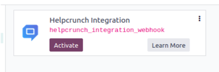
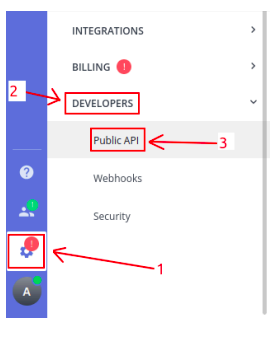
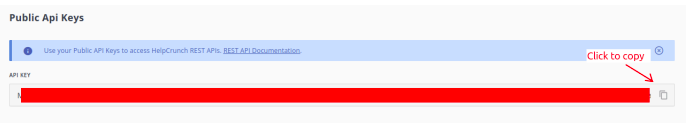
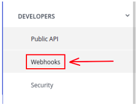
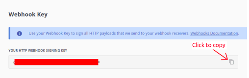
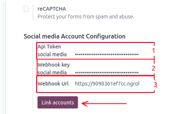
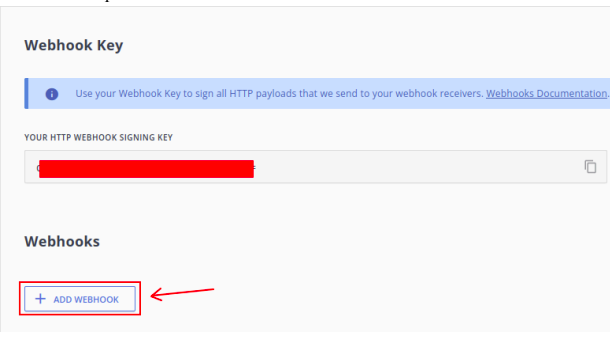
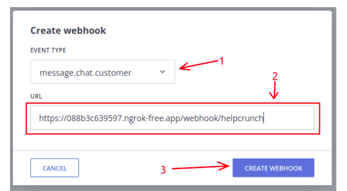
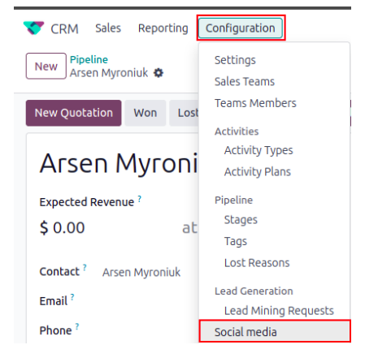

Hephcrunch Integration

Social media integration with Helpcrunch: handle social media messages directly in Odoo CRM.
Social media integration with Helpcrunch: handle social media messages directly in Odoo CRM.


This module provides integration with the Helpcrunch service.
As features, it offers the ability to generate leads directly from incoming Helpcrunch messages, maintain communication with customers via the Chatter in a lead, and send messages using custom text templates.
First, you have to install the Helpcrunch Integration module.

We assume you already have a Helpcrunch account with an active subscription. You also need to ensure that you have a Helpcrunch Application connected to your social media accounts.
If everything is set up, go to the Helpcrunch website and log into your account – we’ll need to find the Public API Key, Webhook Key, and set up the webhook in order for the integration to work properly. In your Helpcrunch account, go to Settings > Developers > Public API:


Here you can find your personal API Key.
You also need a Webhook key, to find it go to the Webhooks page:


After you’ve found all the necessary values, go to the Odoo settings. Scroll down the Settings page until you see the Social Media Account Configuration section:

Once you’ve entered the required values, click Link Accounts. After that, copy the Webhook URL from Odoo Settings and add it to Helpcrunch.
In this window, select message.chat.customer as the event type from the list. Then, paste your Webhook URL from Odoo into the URL field below the event type and click Create Webhook:


Now the configuration is done, so we can check if the Social Media type has been created in Odoo. Important: it is created after pressing the Link Accounts button in Odoo Settings.

If you don’t see any Social Media accounts here, please check if you pressed the Link Accounts button or press it again.
New leads will appear in your CRM application in Odoo as soon as someone contacts you through Helpcrunch connections.